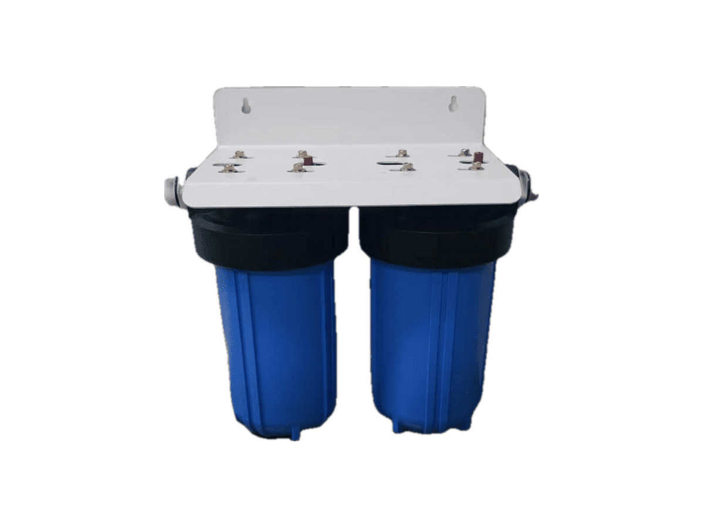
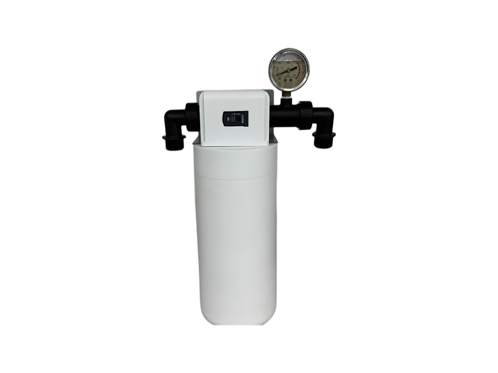

Under-Sink
Under-SinkRP-U07
400–600 GPD under-sink RO purifier
SKU: RP-U07
MOQ: Confirm on enquiry
Home / Products / Under-Sink RO Systems / RP-U17

Under-Sink RO Systems
Twin-housing high-flow pre-filter
RP-U17 — Twin-housing high-flow pre-filter. Key specification: Cartridge format 10-inch large-diameter. Specifications are confirmed per model and order.
Voltage / frequency is configurable to the target country. Other configurations are confirmed per order.
Three pre-filter options in the RP-U17 family — quote as RP-U17 and specify the variant (twin-housing KDF, folding PP + carbon fibre, or grooved PP cotton).
Hover over a variant image to see its specifications. On touch screens, tap an image.

Full specifications for each variant, side by side. The specification table further down shows RP-U17's values.
| Specification | RP-U17-1 — twin-housing KDF | RP-U17-2 — folding PP + carbon fibre variant | RP-U17-3 — grooved PP cotton variant |
|---|---|---|---|
| Form | Twin-housing pre-filter | Single-housing pre-filter | 10-inch jumbo cartridge |
| Filter media | PP + carbon + 60 g KDF; grooved PP sediment | Folding PP + carbon fibre | Silicone + PP + PP cotton |
| Filtration stages | Confirmed per order | 2 | Confirmed per order |
| Flow | ≥45.42 L/min at 0.2 MPa; 1-inch pipes | 33.3 L/min | Confirmed per order |
| Service volume / service life | ≥189 tonnes (source test water) | 30000 L; cartridge life 1–2 years | Confirmed per order |
| Dimensions (L×W×H) | Confirmed per order | 296 × 165 × 485 mm (with timer) | Confirmed per order |
| Installation size (elbow fittings) | — | 319 × 165 × 485 mm | — |
| Housing | Food-grade reinforced PP | PP + glass fibre | — (cartridge only) |
| Cartridge connection | Confirmed per order | Spin-weld | — (cartridge only) |
| Chlorine removal | ≥50% at 15 L/min; 2 ±0.3 ppm feed | Confirmed per order | Confirmed per order |
9 specification rows from the ROPureOEM catalogue.
| Cartridge format | 10-inch large-diameter |
|---|---|
| Carbon cartridge | PP + carbon + 60 g KDF |
| Second cartridge | Grooved PP sediment |
| Housing | Food-grade reinforced PP |
| Flow test | ≥45.42 L/min at 0.2 MPa; 1-inch pipes |
| Chlorine test | ≥50% at 15 L/min; 2 ±0.3 ppm feed |
| Reference service volume | ≥189 tonnes (source test water) |
| Voltage / frequency | Configurable to target country |
| Other configurations | Confirmed per order |
Specifications are taken from the ROPureOEM catalogue. Where a value is not yet confirmed, it is listed as “Confirmed per order” — we do not publish unconfirmed figures.
Under-Sink400–600 GPD under-sink RO purifier
SKU: RP-U07
MOQ: Confirm on enquiry
 Under-Sink
Under-SinkUnder-sink RO with storage heating
SKU: RP-U08
MOQ: Confirm on enquiry
 Under-Sink
Under-SinkHigh-capacity front-access RO purifier
SKU: RP-U09
MOQ: Confirm on enquiry
 Under-Sink
Under-SinkThree-cartridge RO purifier
SKU: RP-U11
MOQ: Confirm on enquiry